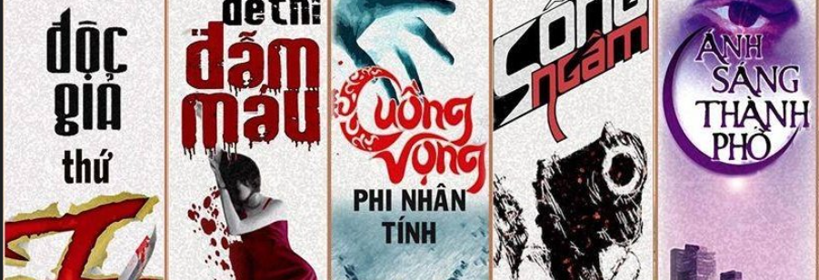

Trang chủ | Giới thiệu | Truyện Mới |Liên hệ |Quản trị bài viết

SKĐS - Là một thể loại cuốn hút bạn đọc, từng có thời kỳ phát triển rực rỡ nhưng văn học trinh thám Việt (truyện ngắn, tiểu thuyết) càng về sau càng thưa vắng tác phẩm nổi bật trên văn đàn. Tác phẩm mới ít ỏi hoặc chất lượng chưa cao nên nhiều độc giả mong rằng, văn học trinh thám được ví như mảnh đất màu mỡ cần được “khai hoang” trong tương lai gần.
Bởi lẽ, các truyện ngắn, tiểu thuyết trinh thám giúp độc giả được rèn luyện tư duy, khả năng suy luận, trí tưởng tượng và học thêm những kiến thức mới. Bên cạnh đó, các tác phẩm trinh thám thường có văn phong rất tinh tế và chất riêng, tác giả thường tạo ra những cảnh vô cùng thật, sống động, dẫn dắt người đọc vào thế giới của câu chuyện và độc giả cảm thấy mình như đang ở đó, lơ lửng phía sau nhân vật chính và theo dõi những gì đang xảy ra. Những âm mưu phức tạp, những tình tiết lắt léo, đan xen được liên kết với nhau một cách tài tình và cái kết luôn chứa đựng sự bất ngờ. Và nhiều độc giả thích đọc truyện trinh thám bởi sự hồi hộp, gay cấn mà tác phẩm đem lại.
Đến với trang "Truyện trinh thám" của Hsakura, bạn sẽ bước chân vào một thế giới đầy bí ẩn và hồi hộp, nơi mỗi câu chuyện đều là một hành trình khám phá những bí ẩn kỳ bí và ly kỳ. Tại đây, những ngôi nhà ma ám không chỉ là bối cảnh, mà còn là những nhân vật sống động với những câu chuyện riêng, chờ đợi bạn khám phá.
Hsakura mang đến cho bạn những tác phẩm trinh thám đầy kịch tính, nơi mà từng trang truyện là một màn kịch hấp dẫn, đầy bất ngờ. Bạn sẽ cùng các nhân vật chính bước vào các vụ án hóc búa, giải mã những bí mật đen tối, và lần theo dấu vết của những tên tội phạm xảo quyệt.
Mỗi câu chuyện tại "Truyện trinh thám" của Hsakura không chỉ dừng lại ở sự ly kỳ mà còn chứa đựng những cảm xúc sâu sắc, những bài học về cuộc sống và con người. Với ngòi bút sắc sảo và trí tưởng tượng phong phú, Hsakura sẽ dẫn dắt bạn qua từng cung bậc cảm xúc, từ hồi hộp, sợ hãi đến vỡ òa trong niềm vui khi bí mật được hé lộ.
Hãy cùng bước vào thế giới của Hsakura, nơi những bí ẩn đang chờ được khám phá và những câu chuyện hấp dẫn đang chờ bạn trải nghiệm.